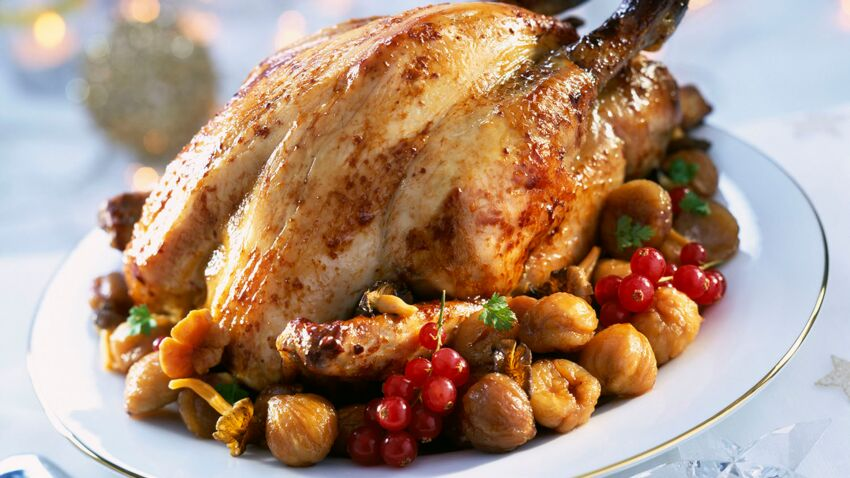
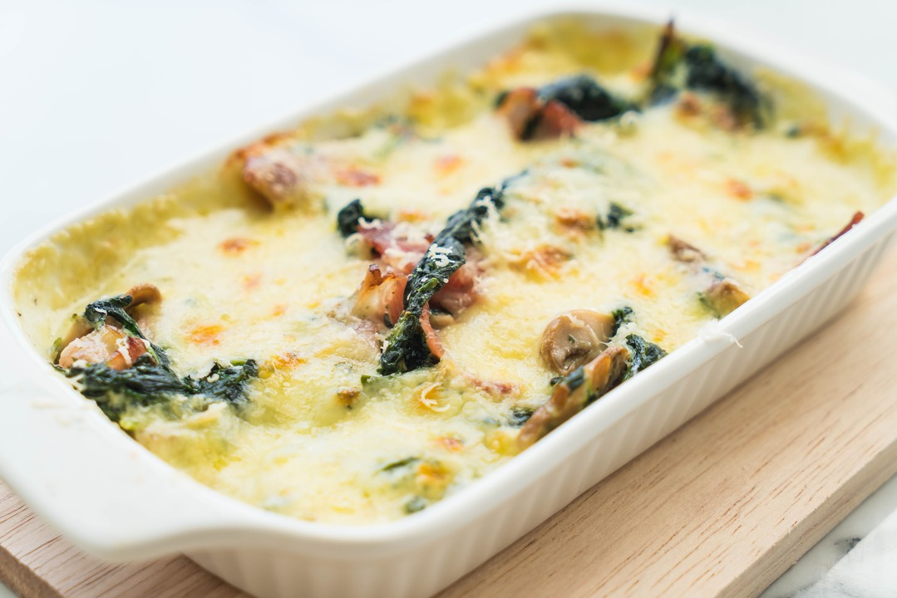

Bienvenue sur Simmer kitchen
Simmer Kitchen

Recettes populaires

Chapon aux marrons
Recette délicieuse pour Thanksgiving

Pavé de saumon
Recette délicieuse pour Thanksgiving

Lasagne aux épinards
Recette délicieuse pour Thanksgiving